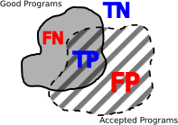
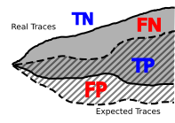

Introduction: Decidability
What a program is, why no machine can answer every question about programs (the halting problem and Rice's theorem), how analyses live with that by choosing what to get wrong (may and must, sound and complete), and the JPAMB game you will play all semester.
Programs and analysis
A question older than computers
Hilbert, Russell, Church, and the crank that may never stop
Around 1900 mathematicians dreamt of a machine for truth: write down any mathematical statement, turn a crank, and out comes "true" or "false". No more arguing, no more mistakes.
To build such a machine you need a fixed recipe that a clerk (or later, a computer) can follow without thinking. And then an awkward question appears: will the clerk ever finish? A recipe that sometimes runs forever does not answer anything. "Does this procedure stop?" is the very first program analysis question, and it was asked before anyone had built a computer.
- The foundational crisis. Early set theory could prove false things. Russell's paradox: let $R$ be the set of all sets that do not contain themselves. Does $R$ contain itself? If it does, it should not; if it does not, it should. A theory that allows $R$ is broken.
- Hilbert's program. David Hilbert proposed to rebuild mathematics on a finite, consistent set of axioms and to find a mechanical procedure that decides every statement (the Entscheidungsproblem, "decision problem").
- What is "mechanical"? To even state the goal precisely, people had to define computation. Alonzo Church invented the lambda calculus (1936), Alan Turing his machines (1936). They turned out to be equally powerful.
- Enumerating truths. If a procedure can derive all truths, we can list them one after another: run the derivations in parallel and print each conclusion. A theory whose theorems can be listed like this is called recursively axiomatizable.
- The snag. Listing is not deciding. To answer "is $\varphi$ true?" you wait for $\varphi$ (or its negation) to appear in the list, and you have no idea whether you will wait forever. Proving that procedures terminate became the central problem, and Church and Turing showed in 1936 that it cannot be solved in general.
Definition 1.1 Russell's set
$$R = \{\, x \mid x \notin x \,\} \qquad\Longrightarrow\qquad R \in R \iff R \notin R.$$
"R is the set of all x that are not members of themselves; then R is a member of itself exactly when it is not." Any theory proving both directions is inconsistent.
Definition 1.2 Decidable and recursively enumerable sets
A set $S$ (of statements, programs, words) is decidable if there is a procedure that, for every $x$, terminates and answers whether $x \in S$.
$S$ is recursively enumerable (r.e., also semi-decidable) if there is a procedure that, for every $x$, terminates with "yes" exactly when $x \in S$ (and may run forever when $x \notin S$). Equivalently, some procedure lists all elements of $S$.
Proposition 1.3 Deciding = enumerating both sides
$S$ is decidable if and only if both $S$ and its complement $\overline{S}$ are recursively enumerable.
"You can always answer yes or no exactly when you can recognise the yes-cases and you can also recognise the no-cases."
Proof
($\Rightarrow$) A decider for $S$ is in particular a recogniser for $S$; flipping its answer gives a recogniser for $\overline{S}$.
($\Leftarrow$) Run the recogniser for $S$ and the one for $\overline{S}$ in alternation, one step each. Every $x$ is in exactly one of the two sets, so exactly one recogniser eventually says yes, and we answer accordingly. This always terminates. ∎
Hilbert hoped that the set of true statements of arithmetic is decidable. Gödel (1931), Church and Turing (1936) showed it is not; the halting problem of topic 05 is the cleanest example of a set that is r.e. but not decidable.
What is a program?
A recipe, a state, and a step function
A program is a recipe card, and the computer is an extremely literal cook. At every moment the kitchen is in some state: what is on the counter, and which line of the recipe the cook is on. The cook reads that one line and changes the kitchen a little. That is one step.
Running the program means stepping again and again until nothing changes any more. The list of kitchen snapshots along the way is the trace: the story of one run.
- A program $p$ is a piece of syntax from a language $L$: Java source, JVM bytecode, Python, a Turing machine. On its own it does nothing; it needs a machine.
- A state bundles everything the machine needs to continue: variable values, the stack, the heap, and the program counter (which instruction is next).
- The step function takes the program and a state and returns the next state. The initial state is built from the inputs (for
countdown(3): counter at instruction 0,n = 3). - If a step returns the very same state, nothing will ever change again: we have reached a fixpoint and say the program ran to completion. Otherwise the trace goes on forever.
def run(p, s):
trace = [s]
while (t := step(p, s)) != s: # stop at a fixpoint
s = t
trace.append(s)
return trace # may never return!The lab below runs real bytecode with exactly this loop. In our little JVM a finished program steps into the final state ok (or an error), which then never changes: that is the fixpoint.
Definition 1.4 Program
A program is an object $p \in L$ from a language $L$, together with a step function from machine states to machine states: $$\mathtt{step} : L \times \State \to \State.$$
"step takes a program and a state, and gives back the next state."
Definition 1.5 Trace, fixpoint, termination
Given an initial state $s_0$, the run of $p$ is the sequence defined by $$s_{i+1} = \mathtt{step}(p, s_i) \qquad (i = 0, 1, 2, \ldots).$$ A state $s$ is a fixpoint of $p$ if $\mathtt{step}(p, s) = s$. The program terminates from $s_0$ if some $s_n$ is a fixpoint; its trace is then the finite sequence $\tau = s_0 s_1 \cdots s_n$, otherwise the infinite sequence $\tau = s_0 s_1 s_2 \cdots$.
"Keep feeding the output of step back into step. If you ever reach a state that step leaves unchanged, the program has finished, and the states you passed through are its trace."
Proposition 1.6 One input, one trace
Because $\mathtt{step}$ is a function, each initial state $s_0$ determines exactly one trace.
Proof
By induction on $i$: $s_0$ is given, and $s_{i+1}$ is the unique value $\mathtt{step}(p, s_i)$. Two runs from the same $s_0$ therefore agree at every index. ∎
In Week 3 the function becomes a relation $\delta_p \subseteq \State \times \State$ so that one state may have several successors (threads, random choices), and the meaning of a program becomes the set of all its traces.
What is program analysis?
Automatically finding facts about programs
Program analysis is asking questions about a program and getting answers from a machine instead of a person. "Will this ever crash?" "Does it always finish?" "Is it written in the house style?"
Think of a car mechanic: some facts come from looking at the car (is a tyre missing?), others from driving it (does it pull to the left?). Analyses do both kinds.
- The course's one-line definition: using automatic techniques to figure out facts about a computer program.
- Facts about structure: is the method well formatted, does it contain a division, does it call a deprecated function?
- Facts about possible behaviour: does it halt, can it divide by zero for some input, does it always return a positive number?
- For tiny languages this is easy: in a language of sums of constants,
1 + 2always evaluates to3, and we can just compute. Once a language has inputs, loops and unbounded memory, it becomes extremely hard (the next topics explain why). - The course explores approaches along three axes: manual to automatic, syntactic to semantic, dynamic to static (Part 4).
Definition 1.7 Program property and analysis
A property of programs is a set $P \subseteq L$: the programs that have it. An analysis for $P$ is a procedure $A : L \to \{\mathit{yes}, \mathit{no}\}$. The ideal analysis satisfies $$A(p) = \mathit{yes} \iff p \in P \qquad \text{for all } p \in L.$$
"An ideal analysis says yes for exactly the programs that have the property."
Two examples. $P_{/} = \{p \mid \text{the text of } p \text{ contains the character } /\}$ is about structure; a one-line scan decides it. $P_{\mathit{halt}} = \{p \mid p \text{ terminates on every input}\}$ is about behaviour; the coming topics show that no procedure decides it. Most of this course is about getting as close to the ideal as possible for behavioural properties, and being honest about the gap.
A Turing-complete mess
Powerful enough to do anything, including the wrong thing
A language is Turing complete when it can express any computation that any computer can do. Java, C and Python are. So are joke languages like Brainfuck (eight symbols) and even PowerPoint animations.
That power is a double-edged sword. A language strong enough to do everything is strong enough to do every bad thing too, and, as we will see, strong enough to hide what it is going to do.
- Roughly, you need three ingredients: unbounded memory (or unbounded integers, lists, recursion), conditionals, and loops or recursion. With those you can simulate a Turing machine.
- Most of the course focuses on Turing-complete languages (Java bytecode), since those are the languages people actually use.
- Such a program can
- fire the missiles,
- not fire the missiles,
- never terminate,
- kill grandma, and worst of all
- throw a
NullPointerException!
Definition 1.8 Turing completeness
A language $L$ is Turing complete if for every Turing machine $M$ there is a program $p_M \in L$ that simulates $M$: on every input, $p_M$ halts exactly when $M$ halts, with the same output.
"Whatever a Turing machine can compute, some program in L computes too, including whether or not it stops."
Thesis Church and Turing
Every function that is computable by an effective, mechanical procedure is computable by a Turing machine (equivalently, in the lambda calculus).
This is a thesis, not a theorem: "mechanical procedure" is an informal idea. It is why results about Turing machines transfer to every Turing-complete language.
Undecidability
The halting problem
The mother of all analysis problems
The halting problem asks: given any program and its input, will it eventually stop, or run forever?
For a particular program you can often tell: a countdown from 3 stops after three rounds. The problem is building one machine that answers correctly for every program. Turing proved that no such machine can exist.
There is a half-solution: just run the program. If it stops, you saw it stop. If it does not stop, you keep waiting, and you never learn whether you should give up.
- Decide means: always answer, in finite time, and always correctly. An analysis that answers "I don't know" or never answers does not decide.
- Some programs are easy: no loops and no recursion means it halts.
countdown(n)halts for $n \geq 0$ and loops for $n \lt 0$ (it counts down past zero for 4 billion steps in 32-bit arithmetic, which JPAMB reports as*). - Some programs are open research problems.
collatz(n)(halve if even, $3n+1$ if odd, stop at 1) has been checked for all $n$ up to about $2^{68}$, but nobody can prove it halts for every positive $n$. A halting decider would settle the Collatz conjecture in an afternoon. - Recognisable, not decidable. "Run it and see" answers "yes, it halts" whenever that is true, and never answers otherwise. In the language of Week 2: the halting problem is recognisable (semi-decidable) but not decidable.
Definition 1.9 The halting problem
Given any program $p \in L$ and initial state $s_0$, decide whether the sequence $$s_1 = \mathtt{step}(p, s_0),\ \ s_2 = \mathtt{step}(p, s_1),\ \ \ldots,\ \ s_n = \mathtt{step}(p, s_{n-1})$$ eventually stabilises, i.e. whether there is an $n$ with $s_n = \mathtt{step}(p, s_n)$. As a set: $$H = \{\, (p, s_0) \mid \exists n \in \N.\ s_n = \mathtt{step}(p, s_n) \,\}.$$
"H contains the pairs of a program and a start state from which the program reaches a fixpoint after finitely many steps."
Theorem 1.10 Turing, 1936
For a Turing-complete language $L$, $H$ is undecidable: there is no total computable $h$ with $h(p, s_0) = \mathit{true} \iff (p, s_0) \in H$. (Proof in topic 06.)
Proposition 1.11 Halting is recognisable
$H$ is recursively enumerable.
Proof
The procedure "compute $s_1, s_2, \ldots$ and answer yes as soon as $s_n = \mathtt{step}(p, s_n)$" terminates with yes exactly when $(p, s_0) \in H$. Combined with Proposition 1.3 and Theorem 1.10, the complement $\overline{H}$ (the programs that run forever) is therefore not even recognisable. ∎
Why no halting decider can exist
Ask the oracle about yourself, then do the opposite
Imagine a fortune teller who claims to predict, for any program, whether it will stop. Write a stubborn program that asks the fortune teller about itself and then does the opposite: if the prediction is "you will stop", it loops forever; if the prediction is "you will run forever", it stops at once.
Whatever the fortune teller says about the stubborn program is wrong. So a perfect fortune teller cannot exist. Not "nobody has built one yet": it is logically impossible.
Suppose a mechanical procedure exists; then we can write it as a program:
def does_halt(p: Program) -> bool:
# returns True if p halts
...and use it in another program:
def main():
while does_halt(main):
print("Running")- If
does_halt(main)returnsTrue, the loop runs forever, somaindoes not halt: the answer was wrong. - If it returns
False, the loop body never runs andmainhalts immediately: wrong again. - Both possible answers are wrong, so
does_haltcannot exist.
A program referring to itself (main inside main) is legitimate: programs can obtain their own code (Kleene's recursion theorem). The textbook version avoids self-reference by passing the program to itself as input, which is the "diagonal" in the table below.
| $h(q_i, q_j)$ | $q_1$ | $q_2$ | $q_3$ | $q_4$ |
|---|---|---|---|---|
| $q_1$ | halt | loop | halt | halt |
| $q_2$ | loop | loop | halt | loop |
| $q_3$ | halt | halt | halt | loop |
| $q_4$ | loop | halt | loop | loop |
| $D$ | loop | halt | loop | halt |
Row $i$ lists what program $q_i$ does on input $q_j$. $D$ flips the diagonal, so $D$ differs from every row in at least one place: $D$ is none of the $q_i$. If $h$ were computable, $D$ would be a program, so it must appear as some row. Contradiction.
Theorem 1.12 The halting problem is undecidable
There is no total computable function $h : L \times L \to \{\mathit{true}, \mathit{false}\}$ such that for all programs $q$ and inputs $x$: $h(q, x) = \mathit{true} \iff q$ halts on input $x$.
Proof (diagonalisation)
Assume such an $h$ exists. Since $h$ is computable and $L$ is Turing complete, the following program $D$ exists in $L$: $$D(q) := \textbf{if } h(q, q) \textbf{ then loop forever} \textbf{ else return.}$$ Now run $D$ on its own code and ask whether $D(D)$ halts.
- If $h(D, D) = \mathit{true}$, then by construction $D(D)$ loops forever, so $D$ does not halt on $D$; by the specification of $h$, $h(D, D) = \mathit{false}$. Contradiction.
- If $h(D, D) = \mathit{false}$, then $D(D)$ returns, so it halts, and $h(D, D)$ should be $\mathit{true}$. Contradiction.
Both cases are impossible, so no such $h$ exists. ∎
"Any claimed halting decider can be turned against itself: build the program that does the opposite of what the decider predicts about it."
Notice what the proof does not say: it does not say that halting is hard for every program, nor that heuristics are useless. It says every candidate decider is wrong on at least one program (the lab constructs that program for several candidates).
Rice's theorem: it is not just halting
Every interesting question about behaviour is undecidable
You might hope that halting is a weird special case and that useful questions like "does it fire the nukes?" are fine. Sadly no. If you could answer "does it fire the nukes?" for every program, you could answer the halting question: put the mystery computation first and the nuke launch after it. The nukes fire exactly when the mystery computation finishes.
Rice's theorem says this trick works for every question about what a program does, as long as the answer is sometimes yes and sometimes no.
def main():
something_that_might_go_forever()
fire_the_nukes()- An analysis that decides "
mainfires the nukes" also decides "something_that_might_go_foreverhalts". Since halting is undecidable, so is nuke-firing. This move, turning one question into another, is called a reduction. - Semantic properties are about behaviour: "may divide by zero", "always returns a positive number", "terminates". Two programs that behave identically agree on them.
- Syntactic properties are about the text: "contains
/", "has more than 100 lines". These are usually decidable, and Rice's theorem says nothing about them. - Non-trivial means some programs have the property and some do not. "Every program either halts or not" is trivial and decidable (always answer yes).
Definition 1.13 Semantic and non-trivial properties
A property $P \subseteq L$ is semantic if it only depends on behaviour: $$\forall p, q \in L.\ \ \Sem(p) = \Sem(q) \implies (p \in P \iff q \in P).$$ It is non-trivial if $P \neq \emptyset$ and $P \neq L$.
"If two programs behave the same, they either both have the property or both lack it; and the property is neither true of all programs nor of none." Here $\Sem(p)$ is the behaviour of $p$, its set of traces (defined in Week 3); Rice's original statement uses the partial function the program computes.
Theorem 1.14 Rice, 1953
For a Turing-complete language, every non-trivial semantic property of programs is undecidable.
Proof sketch (reduction from halting)
Let $P$ be semantic and non-trivial, and let $\bot$ be a program that never halts. We may assume $\bot \notin P$ (otherwise prove the result for the complement $L \setminus P$, which is decidable iff $P$ is). Since $P \neq \emptyset$, pick some $y \in P$.
Given any program $q$ and input $x$, construct $$p'_{q,x} := \text{"run } q \text{ on } x \text{; afterwards behave exactly like } y\text{".}$$
- If $q$ halts on $x$, then $p'_{q,x}$ behaves like $y$, so $\Sem(p'_{q,x}) = \Sem(y)$ and $p'_{q,x} \in P$ (semantic!).
- If $q$ does not halt on $x$, then $p'_{q,x}$ never gets past the first line: it behaves like $\bot$, so $p'_{q,x} \notin P$.
So $p'_{q,x} \in P \iff q$ halts on $x$. The construction of $p'_{q,x}$ is mechanical, so a decider for $P$ would give a decider for halting, contradicting Theorem 1.12. ∎
In the notes' example, $y$ is fire_the_nukes() and $q$ is something_that_might_go_forever(). The construction needs $q$ itself not to fire the nukes along the way; that is exactly why the proof starts by running $q$ silently and only then behaving like $y$.
Living with undecidability
May and must
Can it happen, or does it always happen?
There is hope. Most of the time you do not need to know exactly what a program does. You ask one of two questions:
May it happen? Is there at least one run where it happens? ("May it rain this week?")
Must it happen? Does it happen in every run? ("Will it rain every single day?")
If you do not want the nukes fired, a program that may fire them is already a bug. If you build a missile launcher, pressing the red button must fire them.
- Think of a program's behaviour as the set of all its traces: one trace per input (more if the program is non-deterministic). We write it $\Sem(p)$; Week 3 defines it precisely as the maximal trace semantics.
- A trace property $Q$ is a yes/no question about one trace: "does it end in
ok?", "does it divide by zero?", "does it execute instruction 4?". divideByN(int n) { return 1 / n; }: it may divide by zero (take $n = 0$); it does not must divide by zero (take $n = 1$); and it may end inok.- Duality. "It is not the case that it may crash" means exactly "it must not crash". Proving safety is a must-question; demonstrating a bug is a may-question with a witness.
Definition 1.15 May property
A may-property holds if it is true for at least one trace of the program: $$p \models^{\may} Q \;\equiv\; \exists \tau \in \Sem(p).\ Q(\tau).$$
"p may do Q means: some trace of p satisfies Q."
Definition 1.16 Must property
A must-property holds if it is true for all traces of the program: $$p \models^{\must} Q \;\equiv\; \forall \tau \in \Sem(p).\ Q(\tau).$$
"p must do Q means: every trace of p satisfies Q."
Proposition 1.17 Duality of may and must
$$\neg\big(p \models^{\may} Q\big) \;\equiv\; p \models^{\must} \neg Q.$$
"It is false that p may do Q exactly when p must not do Q."
Proof
$\neg(p \models^{\may} Q) \equiv \neg \exists \tau \in \Sem(p).\ Q(\tau) \equiv \forall \tau \in \Sem(p).\ \neg Q(\tau) \equiv p \models^{\must} \neg Q$, using that the negation of "some" is "all ... not" (De Morgan for quantifiers). Symmetrically, $\neg(p \models^{\must} Q) \equiv p \models^{\may} \neg Q$. ∎
Every program has at least one initial state, so $\Sem(p) \neq \emptyset$ and therefore $p \models^{\must} Q \implies p \models^{\may} Q$. In Week 5 the same notions are restricted to traces of bounded length, $p, k \models^{\may} Q$ and $p, k \models^{\must} Q$.
Provable versus true
The two turnstiles $\vdash$ and $\models$
"I can prove it" and "it is true" are different things. A detective can be certain who did it and still lack the evidence; a sloppy court can "prove" an innocent person guilty.
An analysis is a proof machine: what it reports is what it can prove. Whether that matches the truth about the program is a separate question, and the whole vocabulary of soundness and completeness is about that match.
- $\Sigma \vdash \Phi$ ("Sigma proves Phi"): starting from assumptions $\Sigma$, the rules of the system produce a derivation of $\Phi$. This is about symbols and rules (syntax).
- $\Sigma \models \Phi$ ("Sigma entails Phi"): in every situation where $\Sigma$ holds, $\Phi$ holds. This is about meaning (semantics).
- In program analysis, $\Sigma$ is the program (and its context), $\Phi$ is a fact about it. $p \vdash_{\mathbf{A}} Q$ is "analysis $\mathbf{A}$ reports $Q$ for $p$"; $p \models Q$ is "$Q$ actually holds of $p$'s behaviour".
- Example: a crude analysis reports "may divide by zero" whenever the text contains
/. Forreturn 1 / 2;it proves something false; for a method that calls a helper which divides, it misses something true.
Definition 1.18 Provability and truth
$\Sigma \vdash \Phi$ holds if there is a finite derivation of $\Phi$ from the assumptions $\Sigma$ using the inference rules of the system.
$\Sigma \models \Phi$ holds if every model (world, situation, program behaviour) that satisfies all of $\Sigma$ also satisfies $\Phi$.
"Turnstile with one bar: there is a proof. Turnstile with two bars: it is true." Negations are written $\Sigma \nvdash \Phi$ (no proof) and $\Sigma \not\models \Phi$ (not true).
For analyses we decorate the turnstile with the analysis and the kind of question: $p \vdash_{\mathbf{A}}^{\may} Q$ and $p \vdash_{\mathbf{A}}^{\must} Q$ are what the analysis $\mathbf{A}$ claims; $p \models^{\may} Q$ and $p \models^{\must} Q$ are the facts from topic 08.
Sound or complete: choose one
Decide what you are allowed to get wrong
A sound analysis never tells a lie: everything it claims is true. A complete analysis never stays silent about a truth: everything true, it claims.
Easy to achieve one at a time. The analysis that never claims anything is sound (it never lies). The analysis that claims everything is complete (it never misses). For undecidable questions, no analysis that always finishes can be both. So every real analysis picks which kind of mistake it is willing to make, and tries to make few of them.
- The words come from logic: a proof system is sound if every provable statement is true, complete if every true statement is provable.
- Translated into program analysis jargon: an analysis is sound if, whenever it produces a fact, that fact is true of the program. It is complete if it finds every fact that holds.
- Because the questions are undecidable, an analysis cannot be both sound and complete (if it always terminates). The rest of the course is about building analyses that err on a chosen side, and are useful anyway.
- Which side to err on depends on the question: you will see in topic 12 that the same analysis can be called sound or complete depending on how you phrase what it reports.
Definition 1.19 Soundness
In a sound system we can only prove true things: $$\Sigma \vdash \Phi \implies \Sigma \models \Phi.$$
"If we can prove Phi from Sigma, then Phi is true given Sigma."
Definition 1.20 Completeness
In a complete system we can prove all true things: $$\Sigma \models \Phi \implies \Sigma \vdash \Phi.$$
"If Phi is true given Sigma, then we can prove it."
For an analysis $A$ of a property $P \subseteq L$ (Definition 1.7): $A$ is sound if $A(p) = \mathit{yes} \implies p \in P$, and complete if $p \in P \implies A(p) = \mathit{yes}$.
Theorem 1.21 No free lunch
If $P$ is undecidable, no analysis $A$ that terminates on every program is both sound and complete for $P$. In particular (Rice) this holds for every non-trivial semantic property.
Proof
Soundness and completeness together give $A(p) = \mathit{yes} \iff p \in P$ for every $p$. If $A$ also always terminates, $A$ is a decider for $P$, contradicting the undecidability of $P$. ∎
Proposition 1.22 The trivial extremes
$A_{\mathit{never}}(p) = \mathit{no}$ is sound for every $P$, and $A_{\mathit{always}}(p) = \mathit{yes}$ is complete for every $P$.
Proof
$A_{\mathit{never}}$ never says yes, so the premise of "yes implies true" never holds (vacuous truth). $A_{\mathit{always}}$ says yes to everything, so in particular to every $p \in P$. ∎
So soundness or completeness alone is worthless; what matters is how close an analysis gets to the other one while keeping its guarantee.
True and false positives and negatives
Grading one answer at a time
To judge an analysis on real programs, grade each answer. The analysis either said "yes" (a positive) or stayed silent ("no", a negative), and it was either right (true) or wrong (false). That gives four boxes: true positive, false positive, false negative, true negative.
A sound analysis never lands in the "false positive" box. A complete one never lands in "false negative".
- TP: it claimed $\Phi$ and $\Phi$ is true. FP: it claimed $\Phi$ but $\Phi$ is false. FN: $\Phi$ is true but it did not claim it. TN: $\Phi$ is false and it did not claim it.
- The figure shows the program-based view: the grey blob is the set of good programs, the dashed blob what the analysis accepts as good. Overlap is TP, accepted-but-bad is FP, good-but-rejected is FN, outside both is TN.
- Two standard summary numbers: precision (of everything claimed, how much was true) and recall (of everything true, how much was claimed). A sound analysis has perfect precision, a complete one perfect recall.

Definition 1.23 Classification of a proposition
An individual proposition $\Phi$ is a true positive, false positive, false negative or true negative according to:
| $\Sigma \models \Phi$ | $\Sigma \not\models \Phi$ | |
|---|---|---|
| $\Sigma \vdash \Phi$ | TP | FP |
| $\Sigma \nvdash \Phi$ | FN | TN |
"Rows: did the analysis prove it? Columns: is it true? Diagonal = correct, off-diagonal = mistakes."
Proposition 1.24
An analysis is sound $\iff$ it produces no false positives; complete $\iff$ it produces no false negatives. With $$\mathrm{precision} = \frac{TP}{TP + FP}, \qquad \mathrm{recall} = \frac{TP}{TP + FN},$$ soundness means precision $= 1$ and completeness means recall $= 1$ (whenever the denominators are non-zero).
Proof
An FP is exactly a $\Phi$ with $\Sigma \vdash \Phi$ and $\Sigma \not\models \Phi$, i.e. a counterexample to $\vdash \Rightarrow \models$. An FN is a counterexample to $\models \Rightarrow \vdash$. No counterexamples means the implication holds. ∎
The soundness confusion
Programs or traces? Flip the question and the words swap
Is a "sound" analysis one that never misses a bug, or one that never raises a false alarm? Both, depending on who you ask, and that is the confusion.
If the question is "is this program OK?", sound means: it only stamps "OK" on programs that really are OK, so it never misses a bug. If the question is "is there a buggy run?", sound means: every bug it reports is real, so no false alarms. Same word, opposite promise.
- Program-based questions (type systems, static analyses): is the program well-formed? A sound analysis only accepts correct programs; a complete analysis accepts all correct programs. (First figure.)
- Trace-based questions (mostly dynamic analyses): does the program have an execution that ends in a bad state? A sound analysis only reports real traces; a complete analysis finds all of them. (Second figure: real traces vs the traces the analysis expects.)
- The two views are each other's negation. "Accept $p$ as bug-free" is "reject: $p$ has a buggy trace". So a sound bug-free checker is the same thing as a complete bug finder.
- Extra confusion: users of static bug finders count a missed bug as a false negative and a wrong warning as a false positive. They then say "a sound analysis has no false negatives", which is the trace view, inconsistent with the theory's program view. The course avoids this by talking about may and must analyses and about warnings.

Let $B \subseteq L$ be the programs with at least one buggy trace and $G = L \setminus B$ the bug-free ones.
Definition 1.25 Checker and bug finder
A checker $A_G$ answers the program question "is $p \in G$?". From it we get a bug finder $A_B(p) := \neg A_G(p)$ ("$p$ has a bug").
Proposition 1.26 Sound checker = complete bug finder
$$A_G \text{ sound for } G \iff A_B \text{ complete for } B.$$
"A checker that only approves bug-free programs is the same as a bug finder that flags every buggy program."
Proof
$A_G$ sound means $\forall p.\ A_G(p) \Rightarrow p \in G$. Take the contrapositive: $p \notin G \Rightarrow \neg A_G(p)$, i.e. $p \in B \Rightarrow A_B(p)$, which is completeness of $A_B$ for $B$. Every step is an equivalence. ∎
May and must analyses
Over-approximate or under-approximate the traces
Picture all the real runs of a program as fish in a lake. A may analysis throws a huge net that surely catches every real fish, plus some driftwood it mistakes for fish. A must analysis only keeps fish it has actually seen, so everything in its bucket is real, but it misses many.
Big net: if no shark is in it, there is no shark in the lake. Bucket: if a shark is in it, there definitely is a shark in the lake. Each net gives one kind of guarantee.
- A may analysis over-approximates the traces: every real trace is covered (plus possibly fake ones). It can guarantee that something does not happen.
- A must analysis under-approximates: every trace it has is real. It can guarantee that something does happen (it holds the witness).
- Static analyses are usually must-sound (they prove properties of all traces); dynamic analyses are may-sound (they demonstrate a property on some trace).
- Completeness is written with "not-may" and "not-must", to stress that the analysis approximates from the other side: a not-may analysis never misses a trace with $Q$.
- Duality: a complete may-analysis for $Q$ is, negated, a sound must-analysis for $\neg Q$. "My net caught no shark" (and my net catches all sharks) means "there must be no shark".
- Warnings vs positives. To avoid the confusion of topic 12, the course calls a reported bug a warning (a classification of traces). A sound static analysis may give false warnings; a sound dynamic analysis never does.
An analysis $\mathbf{A}$ is built to predict one property $Q$; we write its claims $p \vdash_{\mathbf{A}}^{\may} Q$ and $p \vdash_{\mathbf{A}}^{\must} Q$ (from the course's Trace Terminology note).
Definition 1.27 Soundness of an analysis
Every proved fact is true: $$p \vdash_{\mathbf{A}}^{\must} Q \implies p \models^{\must} Q \qquad\qquad p \vdash_{\mathbf{A}}^{\may} Q \implies p \models^{\may} Q.$$
"If a sound must-analysis says Q holds on all traces, it does; if a sound may-analysis says Q holds on some trace, it does."
Definition 1.28 Completeness of an analysis (not-may, not-must)
Every true fact is found: $$p \models^{\may} Q \implies p \vdash_{\mathbf{A}}^{\notmay} Q \qquad\qquad p \models^{\must} Q \implies p \vdash_{\mathbf{A}}^{\notmust} Q.$$
"If some trace really has Q, a complete not-may analysis reports it; if all traces have Q, a complete not-must analysis reports it." An analysis can be sound or complete, but never both.
Definition 1.29 Over- and under-approximation
A set of traces $T$ over-approximates $p$ if $\Sem(p) \subseteq T$ and under-approximates $p$ if $T \subseteq \Sem(p)$.
Proposition 1.30 What each approximation guarantees
(a) If $\Sem(p) \subseteq T$ and $\forall \tau \in T.\ \neg Q(\tau)$, then $p \models^{\must} \neg Q$.
(b) If $T \subseteq \Sem(p)$ and $\exists \tau \in T.\ Q(\tau)$, then $p \models^{\may} Q$.
Proof
(a) Any $\tau \in \Sem(p)$ is in $T$, hence $\neg Q(\tau)$. (b) The witness $\tau \in T$ is also in $\Sem(p)$. ∎
Proposition 1.31 Duality of analyses
$$\neg\big(p \vdash_{\mathbf{A}}^{\notmay} Q\big) \;\equiv\; p \vdash_{\mathbf{A}}^{\must} \neg Q,$$ and the right-hand side is a sound must analysis whenever $\mathbf{A}$ is a complete not-may analysis.
Proof
Take completeness, $p \models^{\may} Q \implies p \vdash_{\mathbf{A}}^{\notmay} Q$, and negate both sides (contrapositive): $\neg(p \vdash_{\mathbf{A}}^{\notmay} Q) \implies \neg(p \models^{\may} Q)$. By Proposition 1.17 the right side is $p \models^{\must} \neg Q$. So "the not-may analysis did not report Q" implies "Q must not happen", which is exactly soundness of the must analysis defined by the left side. ∎
A relaxed goal: soundiness
Best result in the shortest time, with honest confidence
In theory we pick a side and stay perfectly sound. In practice, real languages are full of corners (reflection, native code, dynamic class loading) that make perfectly sound analyses useless or slow. So practitioners aim for "sound, except for a few documented corners".
This course relaxes the goal even further: produce the best answer in the shortest time, and say how confident you are. An analysis becomes a careful gambler rather than a judge.
Quote"[...] virtually all published whole-program analyses are unsound and omit conservative handling of common language features when applied to real programming languages."
In Defense of Soundiness: A Manifesto (Livshits et al., CACM 2015, dl.acm.org/doi/10.1145/2644805)
- Soundy analyses are sound for a core language and deliberately unsound for listed features (e.g. reflection,
eval), which the authors must document. - In this course every analysis is a classifier: it reports facts and how confident it is that they are true. JPAMB scores the confidence (topic 19).
Definition 1.32 Soundiness
An analysis $\mathbf{A}$ is soundy with respect to a set of language features $F$ if it is sound on the programs that avoid $F$: $$p \in L_{\setminus F} \;\wedge\; p \vdash_{\mathbf{A}} Q \implies p \models Q,$$ where $L_{\setminus F}$ is the sub-language without the features in $F$.
"Sound, as long as the program stays away from the listed tricky features."
Definition 1.33 Analysis as a calibrated classifier
A probabilistic analysis outputs $\pi(p, Q) \in [0, 1]$, its confidence that $p \models^{\may} Q$. It is calibrated if, among all the predictions with $\pi = c$, a fraction $c$ is actually true.
"When it says 80%, it is right 80% of the time." JPAMB's categories (topic 19) compute exactly these calibrated percentages for you.
The kinds of analysis
Manual versus automatic
Is there a well-defined procedure?
A manual analysis is a person reading code and thinking hard, like a code review. An automatic analysis is a fixed procedure a computer runs without help.
There is a clever middle ground: the person writes down why the code is correct (a proof), and the computer only checks the proof. Checking is easy even when finding the proof is not.
- The difference is whether we have a well-defined procedure for analysing the code.
- Manual inspection is a crucial companion to automatic analysis: humans understand intent, conventions and specifications that tools do not.
- Taken to the extreme, we require the user to prove the code correct (loop invariants, pre- and postconditions) and only check the proof. That is program verification: tools like Dafny, Why3, Coq/Rocq, Isabelle. You will meet its ancestor, Floyd and Hoare's axiomatic semantics, in Week 3.
Proposition 1.34 Checking is decidable, searching is not
For a proof system with finitely many, mechanically checkable rules, the relation "$\pi$ is a derivation of $\Phi$" is decidable, while "$\exists \pi.\ \pi$ is a derivation of $\Phi$" (i.e. $\vdash \Phi$) is in general only recursively enumerable.
"Given a proof, a computer can always tell whether it is correct. Finding a proof can be impossible to automate."
Proof sketch
A derivation is a finite tree; checking it means checking each node is a correct rule instance, a finite amount of work. Searching enumerates all finite trees in order of size; this finds a proof if one exists but runs forever otherwise. ∎
This is how verification sidesteps Rice's theorem: the undecidable part (inventing the invariant) is handed to a human, the decidable part (checking it) to the machine.
Syntactic versus semantic
How it is written, or what it means
A syntactic analysis looks at how the code is written: its spelling and grammar. A semantic analysis looks at what the code does when it runs.
1 + 2 and 2 + 1 are written differently but mean the same. A syntactic analysis can tell them apart; a semantic one cannot (and should not).
- The structure (syntax) of a program is usually a tree of nodes produced by the parser: the abstract syntax tree (AST). Linters and regex scanners work here. Week 2 climbs from raw bits to bytecode.
- The meaning (semantics) is the set of all possible traces: sequences of states and operations the program can go through. Interpreters, fuzzers and abstract interpreters work here (Week 3 onwards).
- Syntactic analyses are cheap and explain themselves well (they can point at the offending text), but are easily fooled; semantic analyses see through rewriting but run into undecidability.
Definition 1.35 Syntactic and semantic properties
A property $P$ is semantic if $\Sem(p) = \Sem(q) \implies (p \in P \iff q \in P)$ (Definition 1.13). A property is syntactic if it is defined by the program's syntax tree $\mathit{ast}(p)$ alone, and need not respect behavioural equivalence.
"Semantic properties cannot tell apart programs that behave the same; syntactic ones can."
Example: let $p_1 = $ return 1 + 2; and $p_2 = $ return 2 + 1;. Then $\mathit{ast}(p_1) \neq \mathit{ast}(p_2)$ but $\Sem(p_1) = \Sem(p_2)$. "The left operand is 1" holds for $p_1$ only, so it is syntactic and not semantic. Syntactic properties over finite trees are typically decidable by a single traversal; non-trivial semantic properties are undecidable (Theorem 1.14).
Dynamic versus static
One run at a time, or all runs at once
A dynamic analysis test-drives the car: it runs the program on some inputs and watches. If the car breaks down, you have proof. If it does not, maybe you just did not take the right road.
A static analysis studies the blueprint and predicts every possible drive at once, without running anything. If it says "no breakdowns possible", you can usually trust it; if it says "might break down", it often cannot show you how.
Mixing both is called a hybrid analysis.
- Dynamic: infer the meaning of the program from single traces, often just by executing it and reporting what happened. It produces a witness (the input) for bad behaviour. It is sound if every behaviour it reports is real, complete if it finds all behaviours.
- Static: consider the entire program and report whether it is free of bugs or problems. When a good static analysis says your program is fine, it probably is; when it finds a potential bug, it often cannot prove it. It is sound if the programs it accepts really are fine, complete if it accepts every fine program.
- Hybrid: e.g. use a static scan to find interesting constants, then fuzz with them (Week 4), or confirm static warnings by running the program.
A dynamic analysis computes finitely many traces $T_{\mathit{dyn}} = \{\tau_1, \ldots, \tau_k\} \subseteq \Sem(p)$ and answers $\exists \tau \in T_{\mathit{dyn}}.\ Q(\tau)$. By Proposition 1.30(b) a "yes" proves $p \models^{\may} Q$.
A static analysis computes a finite description of a set $T_{\mathit{stat}} \supseteq \Sem(p)$ and answers $\forall \tau \in T_{\mathit{stat}}.\ \neg Q(\tau)$. By Proposition 1.30(a) a "yes" proves $p \models^{\must} \neg Q$.
"Dynamic: a found trace is a real trace, so finding Q proves Q may happen. Static: every real trace is among the predicted ones, so if none of the predicted ones has Q, Q cannot happen."
The course game: JPAMB
The JPAMB benchmark
Predict what small Java methods can do
The whole course is one game. There is a collection of small Java methods. For each one, your tool must guess which things can happen when it runs: finish normally, crash with a division by zero, fail an assertion, and so on. Good guesses earn points; confident wrong guesses cost a lot. You are scored on accuracy and on speed.
- JPAMB = Java Program Analysis Micro Benchmarks (github.com/kalhauge/jpamb). Every method carries
@Caseannotations: an input and the outcome it causes.
@Case("(false) -> assertion error")
@Case("(true) -> ok")
public static void assertBoolean(boolean shouldFail) {
assert shouldFail;
}- The cases are exhaustive: if an outcome is not listed, no input can cause it. Your analyser sees the method but not the annotations (no cheating).
- The method is named by its method id, e.g.
jpamb.cases.Simple.assertBoolean:(Z)V: class, method name, argument types (Zboolean,Iint,[Cchar array) and return type (Vvoid). - Your analyser is a program with two commands:
infoprints five lines (name, version, group, tags, system info or an empty line);"<method id>"prints one prediction per outcome, likedivide by zero;yes. - Evaluate with
uv run jpamb analyse ./your_analyserfrom the JPAMB folder.
| Outcome | What it means |
|---|---|
ok | runs and finishes normally |
divide by zero | tries to divide by zero |
assertion error | fails an assertion (like assert x > 0) |
out of bounds | accesses an array outside its bounds |
null pointer | uses a null reference |
* | runs forever (infinite loop) |
Definition 1.36 Behaviours of a method
Let $O$ be the set of the six outcomes,
$$O = \{\ok,\ \text{divide by zero},\ \text{assertion error},\ \text{out of bounds},\ \text{null pointer},\ *\}.$$
The behaviours of method $m$ are
$$B(m) = \{\, o \in O \mid \exists \tau \in \Sem(m).\ \tau \text{ ends in } o \,\}.$$
Because the cases are exhaustive, $B(m)$ is exactly the set of outcomes in $m$'s @Case annotations.
"An outcome is a behaviour of m if some input makes m end in it." Each JPAMB query "can $o$ happen?" is the may-question $m \models^{\may} (\text{ends in } o)$ of topic 08; answering "no" is the must-claim $m \models^{\must} \neg(\text{ends in } o)$.
Predictions, wagers and scoring
Bet on what you believe, sized by how sure you are
Each prediction is a bet. Bet a little and you win a little or lose a little. Bet everything and you win only slightly more, but if you are wrong you lose everything. So big bets only pay off when you are really sure.
Because picking bet sizes is hard, JPAMB lets you give a percentage ("75% sure") or simply a label like yes, maybe, no; it then works out the best bet for you.
- Wager $w$:
divide by zero;5bets 5 points that it will happen;divide by zero;-10bets 10 points that it won't. Win: $1 - \frac{1}{|w| + 1}$ points (always less than 1). Lose: $-|w|$ points. - Percentage $p$: "this outcome happens for $p$ of the methods that look like this". JPAMB converts it to a wager (code below).
- Category (preferred): any word (except
inf,nan). JPAMB groups all your predictions with the same word, computes the fraction of them that were true, and uses that as the percentage. Label likely thingsyesand unlikely thingsno, and it calibrates the bets for you.
def wager(p): # JPAMB: percentage -> wager
sign = 1
if p < 0.5:
p = 1 - p
sign = -1
if p == 1:
return sign * float("inf")
return sign * (1 - 2 * p) / (-1 + p) / 2Worked example (from the JPAMB rules). Predict "assertion error" for three methods: assertFalse (assert false;, it happens), assertTrue (assert true;, it does not), doNothing (no assert, it does not). Strategy: look for assert.
- Bet $\pm\infty$: +1 for
assertFalse, +1 fordoNothing, $-\infty$ forassertTrue. Total $-\infty$. - Bet $\pm 1$: $+\tfrac12 + \tfrac12 - 1 = 0$.
- Percentages 50% (has assert) and 0% (no assert): wagers $0$ and $-\infty$; points $0 + 0 + 1 = 1$.
- Categories
yes/no: JPAMB finds yes = 1 of 2 = 50% and no = 0 of 1 = 0%, the same bets, total 1, with no calibration work by you.
Definition 1.37 Score of a wager
For a wager $w \in \mathbb{R} \cup \{\pm\infty\}$ on outcome $o$ of method $m$, the prediction is right if $\operatorname{sign}(w) = +$ and $o \in B(m)$, or $\operatorname{sign}(w) = -$ and $o \notin B(m)$. The score is $$s(w) = \begin{cases} 1 - \dfrac{1}{|w| + 1} & \text{if right} \\[2mm] -|w| & \text{if wrong.} \end{cases}$$
"A correct bet of size |w| earns a bit less than one point; a wrong bet costs the full stake."
Definition 1.38 From percentage to wager
$$w(p) = \begin{cases} \dfrac{2p - 1}{2(1 - p)} & \tfrac12 \leq p \lt 1 \\[2mm] +\infty & p = 1 \\[1mm] -\,w(1 - p) & p \lt \tfrac12 \end{cases}$$ For example $w(0.5) = 0$, $w(0.75) = 1$, $w(0.9) = 4$, $w(0.25) = -1$, $w(0) = -\infty$.
"At 50% do not bet; the closer you are to certain, the more you bet; at 100% bet everything." This is the code above rewritten: $\frac{1 - 2p}{(p - 1)\cdot 2} = \frac{2p - 1}{2(1 - p)}$.
Definition 1.39 Category percentage
For a category $c$, the set of pairs $(m, o)$ labelled $c$ gets the percentage $$p_c = \frac{|\{(m, o) \in c \mid o \in B(m)\}|}{|c|},$$ which is then converted with $w(p_c)$.
"A category's percentage is the fraction of its predictions that turned out true." If a category is always right ($p_c = 1$) its infinite bet never loses, so categories can never score $-\infty$.
A first analysis: search the text
The regex baseline, and why it already scores
The simplest analysis just searches the code. If a method contains a division sign, maybe it can divide by zero. If it contains assert, maybe an assertion can fail. Crude, easily fooled, and yet it beats guessing, because how code is written says a lot about what it does.
A text-search analysis reads the source of each method, looks for a pattern, and prints one prediction line per outcome. For example, look for a division sign and for assert:
divide_found = re.search(r"/", method_source) is not None
print("divide by zero;" + ("found-div" if divide_found else "not-found-div"))
assert_found = "assert" in method_source
print("assertion error;" + ("has-assert" if assert_found else "no-assert"))found-div,not-found-div,has-assertandno-assertare categories: you never choose a percentage, JPAMB measures how often each label was right.- Why it scores: methods with
/divide by zero far more often than methods without. The category turns that correlation into calibrated bets. - Its limits:
1 / 2never fails,1 / nfails only for $n = 0$, and division hidden in a called method is invisible. It is neither sound nor complete; it is a decent bet. Week 2 makes syntactic analysis smarter.
The regex analysis is a syntactic property: $A_r(m) = [\,\text{the text of } m \text{ matches } r\,]$, with label $c_{\mathit{yes}}$ if it matches and $c_{\mathit{no}}$ otherwise. Its score depends only on the two calibrated percentages $$p_{c_{\mathit{yes}}} = \Pr[\,o \in B(m) \mid m \text{ matches } r\,], \qquad p_{c_{\mathit{no}}} = \Pr[\,o \in B(m) \mid m \text{ does not match } r\,]$$ over the benchmark. The further these are from $\frac12$ (and from each other), the more points.
"A text search is worth exactly as much as the matching tells you about the outcome, across the whole benchmark."
Cheat sheet
The definitions worth memorising
Program and step
Run until a fixpoint $\mathtt{step}(p, s) = s$; the visited states form the trace.
Halting problem
Recognisable (run and wait) but undecidable (diagonal argument).
Rice's theorem
Proof: "run $q$, then behave like $y \in P$" reduces halting to $P$.
May and must
$p \models^{\must} Q \equiv \forall \tau \in \Sem(p).\, Q(\tau)$
Duality: $\neg(p \models^{\may} Q) \equiv p \models^{\must} \neg Q$.
Sound and complete
complete: $\Sigma \models \Phi \Rightarrow \Sigma \vdash \Phi$
Sound = no false positives, complete = no false negatives. Undecidable: never both.
Analyses
$p \models^{\may} Q \Rightarrow p \vdash^{\notmay}_{\mathbf{A}} Q$
Over-approximation proves absence, under-approximation proves presence.
Duality of analyses
A complete not-may analysis gives a sound must analysis of the negation.
JPAMB score
Categories: $p_c$ = fraction of the category that was true.
| $p, q$ | program | an element of a language $L$ |
| $\State$ | machine states | everything needed to continue running |
| $\tau$ | trace | sequence of states $s_0 s_1 \cdots$; $\tau_0$ is the initial state |
| $\Sem(p)$ | semantics | the set of all traces of $p$ |
| $Q$ | trace property | yes/no question about one trace |
| $\Sigma \vdash \Phi$ | provable | a derivation of $\Phi$ from $\Sigma$ exists |
| $\Sigma \models \Phi$ | true / entailed | $\Phi$ holds whenever $\Sigma$ holds |
| $\models^{\may}, \models^{\must}$ | may, must | true for some trace, for all traces |
| $\vdash_{\mathbf{A}}^{\may}, \vdash_{\mathbf{A}}^{\must}$ | analysis claims | what analysis $\mathbf{A}$ reports |
| $\vdash_{\mathbf{A}}^{\notmay}, \vdash_{\mathbf{A}}^{\notmust}$ | not-may, not-must | the complete (approximating) variants |
| TP, FP, FN, TN | classification | proved and true, proved but false, true but unproved, false and unproved |
| $B(m)$ | behaviours | JPAMB outcomes some input of $m$ reaches |
| $w$ | wager | positive: will happen, negative: won't |
Exam questions
The lecture's "until next time" questions, with model answers
What makes program analysis hard?
Fundamentally, undecidability. The languages we care about are Turing complete, so even the simplest behavioural question, "does this program halt?", cannot be decided by any procedure (Turing's diagonal argument, topic 06). Rice's theorem (topic 07) extends this to every non-trivial semantic property: "may it divide by zero?", "must it return a positive number?", "does it fire the nukes?". Any such question hides a halting question: run the uncertain computation first, then do the thing.
As a consequence an analysis that always terminates cannot be both sound and complete (topic 10); it has to approximate and accept some false positives or some false negatives. On top of the theory there are practical difficulties: the number of traces is astronomically large (every input, every interleaving), real languages have features that are hard to model (reflection, native code, exceptions, the heap), programs need an environment to run, and developers abandon tools with too many false alarms. That is why practical analyses are "soundy" and, in this course, judged as calibrated classifiers.
In what circumstances would you want a May versus a Must analysis?
A may (over-approximating) analysis covers every real trace, so it can guarantee that something does not happen: if no trace in its over-approximation divides by zero, no real one does. Use it when absence matters: safety certification, compiler optimisations that must be correct (removing a null check), proving a security property, or accepting programs in a type system. Its price is false warnings.
A must (under-approximating) analysis only contains real traces, so it can guarantee that something does happen, with a witness: if it found an input that divides by zero, the bug is real. Use it for bug finding where developers want no false alarms (Christakis and Bird: false positive rates above 15 to 20% make developers ignore tools), for reproducing crashes, for generating test cases, and whenever you must convince someone (a ticket with a failing input). Its price is missed behaviours.
By duality the two are two sides of one coin: a complete not-may analysis for $Q$ is a sound must analysis for $\neg Q$ (topic 13). In JPAMB terms: dynamic analysis is good at saying yes to outcomes it has seen; static analysis is good at saying no to outcomes it can exclude.
What does it mean that an analysis is sound?
Borrowed from logic, soundness means everything the analysis proves is true: $\Sigma \vdash \Phi \implies \Sigma \models \Phi$. An analysis is sound if every fact it reports holds of the program: no false positives (topic 11). For the course's notation: $p \vdash^{\must}_{\mathbf{A}} Q \implies p \models^{\must} Q$ for a must analysis, $p \vdash^{\may}_{\mathbf{A}} Q \implies p \models^{\may} Q$ for a may analysis. Its counterpart, completeness, means every true fact is reported; for undecidable properties one cannot have both.
The word is treacherous because it depends on what is being reported (topic 12). For program questions ("is this program safe?") a sound analysis never accepts an unsafe program, so it never misses a bug, but it may reject safe programs. For trace questions ("is there a buggy run?") a sound analysis only reports real bugs, so no false warnings, but it may miss bugs. A sound checker is the same thing as a complete bug finder. When you state that an analysis is sound, always say sound for what. Finally, trivial soundness is easy (report nothing); the value of a sound analysis lies in how much it still manages to report.
Based on the course notes "Introduction" and "Trace Terminology" of 02242 Program Analysis by Christian Gram Kalhauge, DTU Compute, and the JPAMB rules (github.com/kalhauge/jpamb). The two soundness figures are from the course notes. Unofficial study aid.